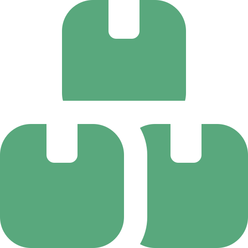

Portada
Arquitectura de Software
Semana 3 — Diseño vs Arquitectura
Universidad de Antioquia · Ingeniería de Sistemas · 2554608 · 2026-2

Apertura
16 meses de retraso
560 millones de dólares
Caso · Ficha técnica
Aeropuerto de Denver, 1994
| Proyecto | Sistema automatizado de manejo de equipaje, Aeropuerto Internacional de Denver (DIA) |
|---|---|
| Apertura planeada | Octubre de 1993 |
| Apertura real | Febrero de 1995 — 16 meses de retraso |
| Alcance original | Manejo 100 % automatizado de equipaje para los tres concourses del aeropuerto completo |
| Infraestructura | ~34 km de rieles y cerca de 4.000 carritos ("telecars") controlados por computadora |
| Sobrecosto estimado | Del orden de 560 millones de dólares en costos adicionales por el retraso |
| Desenlace | El sistema nunca operó de forma completa; años después se abandonó en gran parte a favor de manejo manual/tradicional |
Caso ampliamente documentado en literatura de ingeniería de software (ej. Robert Glass, "Software Runaways"; reportajes de IEEE Spectrum).
Caso · La decisión estructural
Una decisión tomada muy temprano
Antes de definir un solo algoritmo o pantalla, alguien decidió cómo iba a estar organizado el sistema completo: en vez de un manejo de equipaje tradicional (cintas y personal, apoyado parcialmente por tecnología), se optó por automatización total, centralizada, para las 3 terminales a la vez.
Esa decisión —el alcance y el grado de automatización— es estructural: define qué componentes deben existir y cómo deben coordinarse entre sí, mucho antes de programar cualquier cosa.
Caso · Lo que se subestimó
La complejidad de coordinar miles de piezas
Cada carrito debía recibir instrucciones en tiempo real, evitar colisiones con miles de otros carritos, y entregar la maleta correcta en el lugar correcto, sincronizado con los horarios de decenas de vuelos simultáneos.
- El sistema debía coordinar sensores, motores y software de control distribuidos en decenas de kilómetros.
- Pequeñas fallas de sincronización se propagaban: carritos que chocaban, maletas que se caían o se enviaban al lugar equivocado.
- Nunca se había construido nada de esta escala y alcance antes — no había un precedente comparable para validar el diseño.
Caso · Los parches que no alcanzaron
Ajustar el detalle no arregla la estructura
Durante más de un año, los equipos ajustaron algoritmos de ruteo, calibraron sensores, reescribieron rutinas de control de colisiones — decisiones de diseño de detalle, una por una.
Ninguna de esas correcciones podía compensar la decisión original: automatizar por completo la totalidad del manejo de equipaje de un aeropuerto entero, de una sola vez, sin un camino de reversión ni un plan B de menor alcance.
United Airlines terminó desplegando su propio sistema de respaldo en paralelo, más simple, en una de las terminales.
Transición
Dos tipos de decisión, dos consecuencias distintas
El caso de Denver deja una pregunta central para esta sesión: ¿por qué unas decisiones —como el alcance del sistema— resultan tan costosas de cambiar, mientras otras —como un algoritmo de ruteo puntual— se pueden ajustar una y otra vez sin rehacer el proyecto?
Esa es exactamente la distinción entre arquitectura y diseño.
Concepto · Repaso
Arquitectura: la estructura del sistema
Como se vio en la Semana 1, la arquitectura es el conjunto de elementos del sistema, sus relaciones, y los principios que guían su diseño y evolución — las decisiones que afectan al sistema como un todo y que son costosas de revertir.
En Denver: la decisión de automatizar el 100 % del manejo de equipaje para las 3 terminales simultáneamente.

Concepto
Diseño: cómo se construye cada pieza
El diseño (de detalle) es el conjunto de decisiones sobre cómo se implementa un componente ya definido por la arquitectura: qué algoritmo usar, cómo se organiza una clase, qué estructura de datos conviene.
- Vive dentro de los límites que la arquitectura ya trazó.
- Es local: afecta a un componente o a un puñado de ellos, no al sistema completo.
- Es más barato de cambiar — normalmente se puede rehacer sin tocar el resto del sistema.
En Denver: el algoritmo exacto de ruteo de un carrito individual, o cómo se calibra un sensor de un tramo de riel.

Concepto
Comparados, lado a lado
| Arquitectura | Diseño | |
|---|---|---|
| Alcance | El sistema completo | Un componente o módulo |
| Costo de cambiar | Alto — a veces rehacer el proyecto | Bajo a moderado — se ajusta sin rehacer todo |
| Cuándo se decide | Muy temprano, con menos información | A lo largo de todo el desarrollo |
| Quién suele decidir | Arquitecto(a) / equipo técnico líder | El desarrollador responsable del componente |
| Ejemplo (Denver) | Automatización total, 3 terminales, un solo sistema | Algoritmo de ruteo de un carrito |
Contraejemplo
Mito: "arquitectura es solo diseño a gran escala"
Es tentador pensar que arquitectura y diseño son la misma actividad, solo que la arquitectura se hace "en grande". No es una diferencia de tamaño, es una diferencia de tipo de riesgo.
Un componente enorme puede diseñarse mal y aun así ser fácil de rehacer (si está bien aislado). Una decisión pequeña en apariencia —como elegir sincronizar todo un sistema desde un único punto central— puede ser profundamente arquitectónica si compromete la coordinación de todo lo demás.
Lo que separa arquitectura de diseño no es cuánto código involucra, sino qué tan costoso es dar marcha atrás.
Concepto
Por qué se decide temprano, con poca información
Las decisiones arquitectónicas —como el alcance del sistema de Denver— suelen tomarse antes de que exista evidencia real de que funcionarán a esa escala, porque son precisamente las que definen el proyecto desde el inicio.
Ese es el riesgo estructural de toda arquitectura: se decide con menos certeza de la que se tendría más adelante, pero revertirla más adelante es mucho más caro que revertir una decisión de diseño.
Tensión conceptual
¿Puede el diseño "salvar" una mala arquitectura?
El equipo de Denver tenía diseñadores e ingenieros de detalle altamente competentes, que ajustaron algoritmos durante más de un año.
¿Puede la calidad del diseño de detalle compensar una decisión arquitectónica equivocada, si se invierte suficiente tiempo y talento? ¿O hay un límite que ningún ajuste de diseño puede cruzar?

Interacción
Clasifiquen la decisión
Para cada decisión, indiquen si es de arquitectura o de diseño, y justifiquen con el criterio de "costo de revertir":
- Elegir si el sistema del proyecto de Fábrica Escuela va a ser un monolito o estar dividido en varios servicios.
- Elegir qué estructura de datos usar para ordenar una lista dentro de un solo método.
- Decidir que la aplicación va a exponer sus funciones como una API REST, en vez de embeber la lógica en el frontend.
- Cambiar el algoritmo de validación de un formulario de registro.
5 minutos · respondan en voz alta o en el chat
Concepto en disputa
¿Toda decisión arquitectónica exige un prototipo antes?
Postura conservadora: antes de comprometerse con una decisión estructural cara de revertir, hay que validarla con un prototipo o una prueba piloto a menor escala — Denver, en retrospectiva, habría necesitado justamente eso.
Postura opuesta: exigir un prototipo para cada decisión arquitectónica puede ser inviable en tiempo y presupuesto, y algunos riesgos solo se manifiestan a la escala real del sistema completo — ningún prototipo pequeño de Denver habría revelado el problema de coordinar 4.000 carritos reales.
No hay una respuesta única: depende de qué tan reversible es la decisión y qué tan grande es el riesgo si falla a escala completa.
Síntesis
Ideas clave de hoy
- La arquitectura define la estructura del sistema completo; el diseño define cómo se construye cada pieza dentro de esa estructura.
- La diferencia real no es de tamaño, sino de costo de revertir la decisión.
- Denver (1994) muestra que ningún ajuste de diseño de detalle puede compensar una decisión arquitectónica de alcance equivocada.
- Las decisiones arquitectónicas suelen tomarse temprano, con menos certeza, y por eso son las de mayor riesgo del proyecto.
- No hay consenso único sobre cuánto validar con prototipos antes de comprometerse arquitectónicamente — depende del riesgo y de la reversibilidad.
Instrucciones
Taller de hoy — Implementación de ejemplo
Demostración guiada por el docente — 30 a 40 minutos
Sobre el mismo backend Spring Boot de sesiones anteriores, el docente muestra en vivo un cambio de diseño (barato) y un cambio de arquitectura (costoso), para que la diferencia quede visible en código real, no solo en teoría.
Instrucciones · Ejemplo comentado
Un cambio barato vs. un cambio caro
// CAMBIO DE DISEÑO (barato): cambiar el algoritmo
// de ordenamiento interno de una lista de resultados.
// Afecta solo este método, nada más se entera.
public List<Item> ordenar(List<Item> items) {
return items.stream()
.sorted(Comparator.comparing(Item::getNombre))
.toList();
}
// CAMBIO DE ARQUITECTURA (caro): pasar de un backend
// monolítico a separar "SaludoService" en un servicio
// independiente, con su propia base de datos y API.
// Obliga a redefinir cómo se comunican TODOS los
// componentes que hoy lo llaman directamente en memoria.No hay entregable de estudiantes: el objetivo es reconocer, en código real, cuándo un cambio es local y barato y cuándo compromete a todo el sistema.
Cierre
Para la próxima sesión
- Repasar, aunque sea de forma general, qué es un diagrama UML — se usa activamente desde el jueves.
- Identificar, en el proyecto propio de Fábrica Escuela, una decisión que ya sea imposible de revertir sin rehacer buena parte del sistema.
El jueves aprendemos a documentar esas decisiones arquitectónicas con UML, generando las vistas que se entregarán en el Sprint 1: diagrama de paquetes y de componentes.